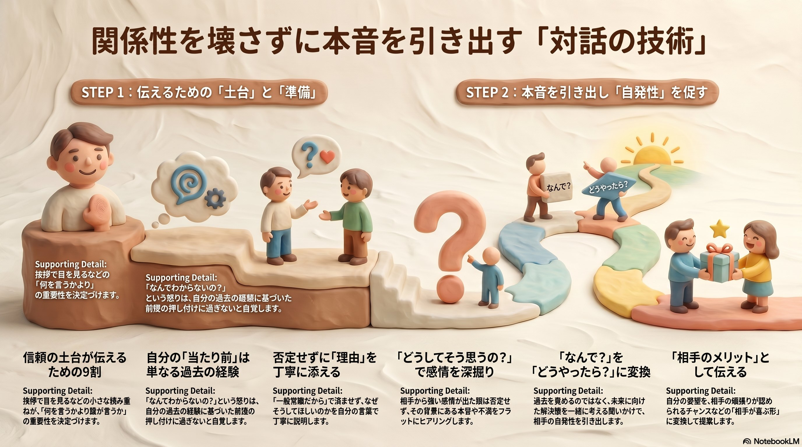
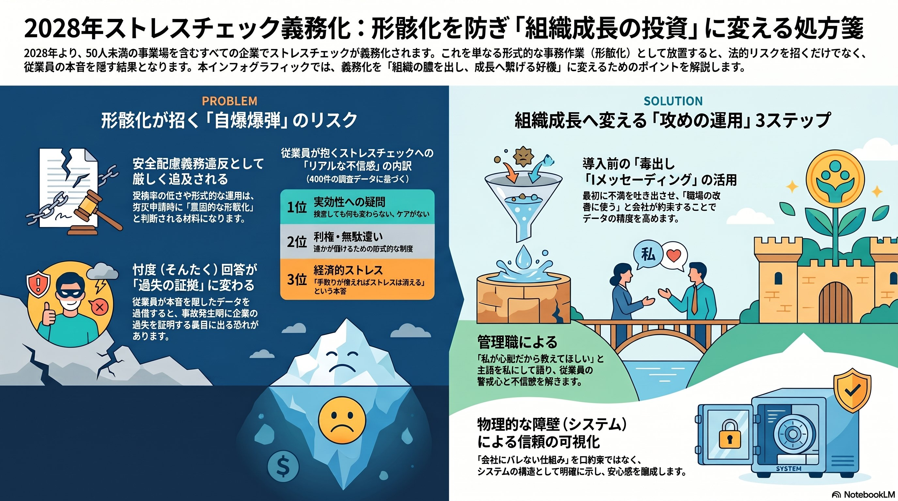

カール・ロジャースの傾聴理論に学ぶ、関係性を壊さずに本音を引き出す「対話の技術」。そして、2028年ストレスチェック義務化を“組織成長の投資”へ変える設計図。
どんなに正しい「正論」も、
受け入れる土台がなければ暴力になる。
「何を言うか」より「誰が言うか」。
信頼の土台の上でこそ、人は自発的に動き出す。この原則は、職場の対話から組織のストレスチェック運用まで、すべてに通じます。
信頼の土台づくりから自発性を促す問いかけまで。ロジャースの「治療的変化の3条件」をマネジメントに翻訳した、現場で使える対話のステップを解説します。

挨拶で目を見るなどの小さな積み重ねが、「何を言うか」より「誰が言うか」の重要性を決める。
「なんでわからないの?」という怒りは、自分の過去の経験に基づく前提の押し付けに過ぎないと自覚する。
「どうしてそう思う?」で感情を深掘りし、「どうやったら?」へ変換。相手の自発性を引き出す。
移動時間にも。「正しさ」だけでは人が動かない理由と、その乗り越え方を耳から学べます。
2028年より50人未満を含む全事業所でストレスチェックが義務化。単なる形式作業で終わらせれば“自爆爆弾”に、本音を引き出す運用に変えれば“最強の経営投資”になります。

導入前に不満を吐き出させ、管理職が主語を「私」にして語ることで、警戒心と不信感を解く。
「会社にバレない仕組み」を口約束ではなく、システム構造として明確に示し安心感を醸成する。
グラフで終わらせず対話で根本原因を特定。iDeCoや評価制度の抜本見直しへ接続する。
「とりあえず実施」が引き金となる2028年の時限爆弾を、どう回避し価値に変えるか。
関係性を保ちながら伝えるための『信頼の土台』は、日常の微細な行動から始まります。ご登録いただいた方には、限定の『特別なワークシート（信頼の土台作り）』をプレゼント中。